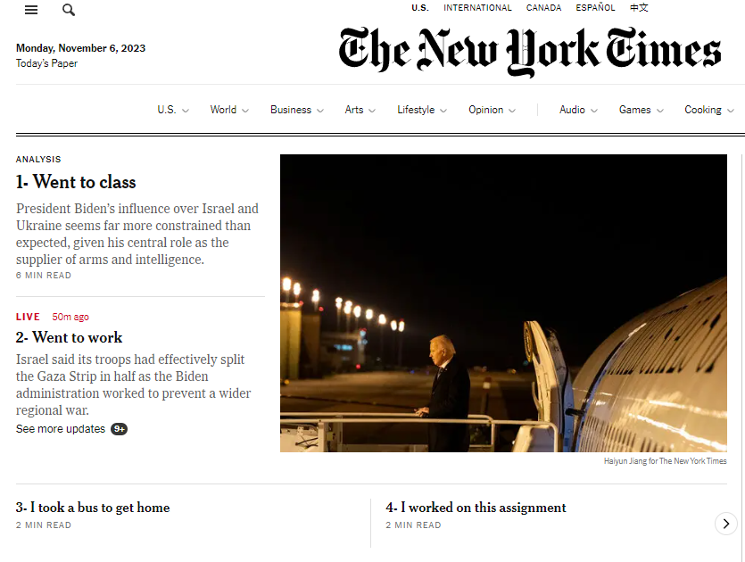

1. The link to their website where the New York Times is listing their open positions:
> https://boards.greenhouse.io/thenewyorktimes2. What font does the New York Times use for their headings?
Cheltenham
3. Change three of their headlines to three things that happened to you today.
4. Screenshot of browser:
